This is the foundational asset management module that allows organizations to manage physical assets such as laptops, desktops, and appliances. Includes issuance, returns, location and category setup, and multi-company functionality.
These add-ons extend the functionality of the core module and are ready for use:
These features will be released as separate modules that extend this core.
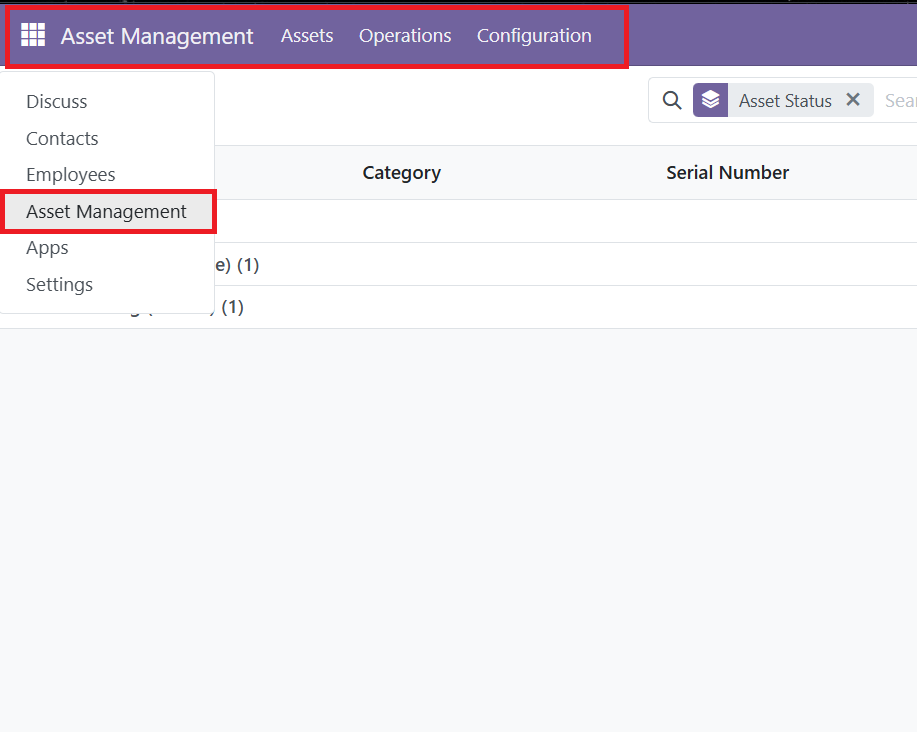
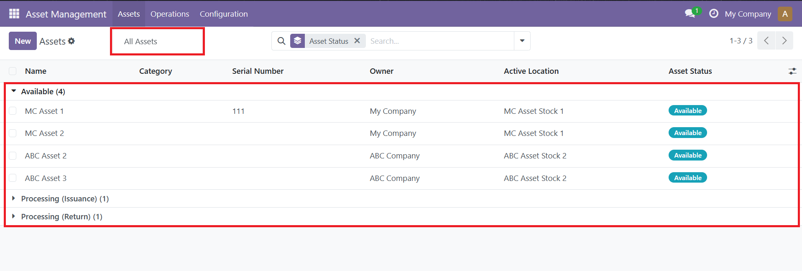
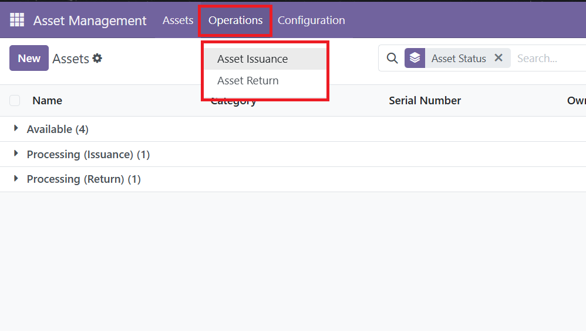
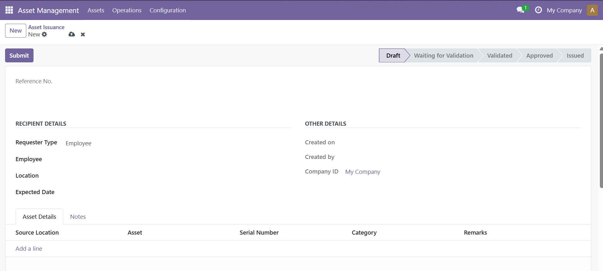
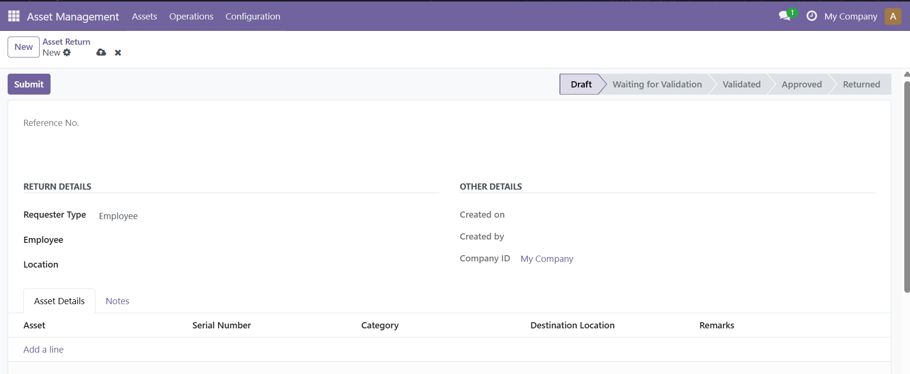
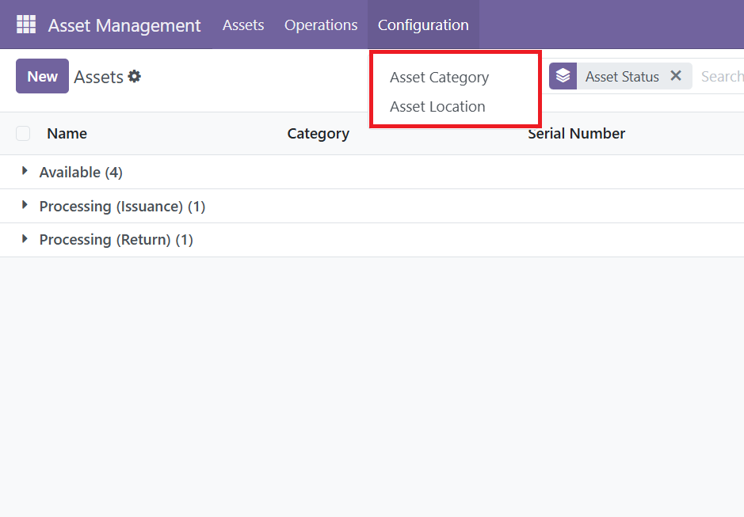
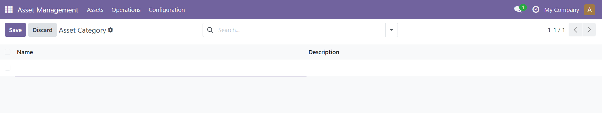
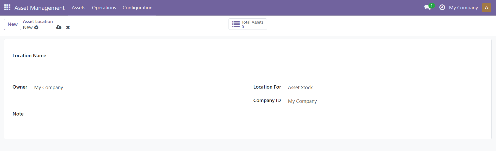
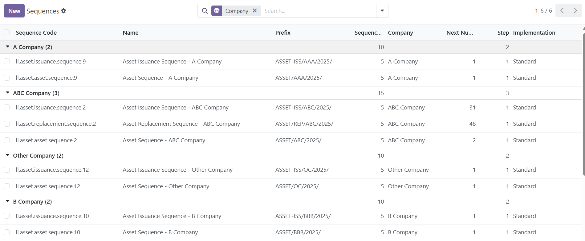
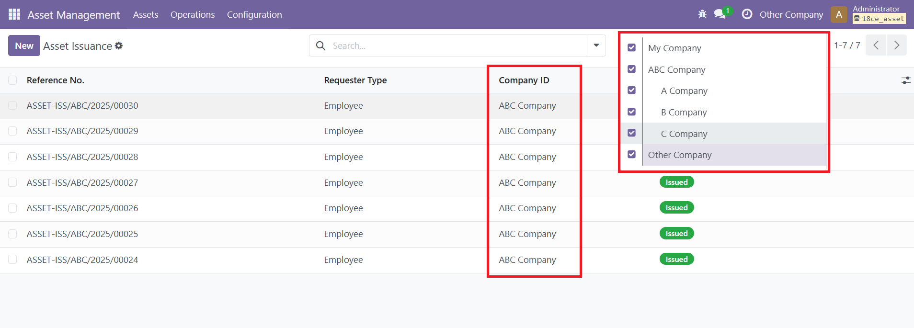
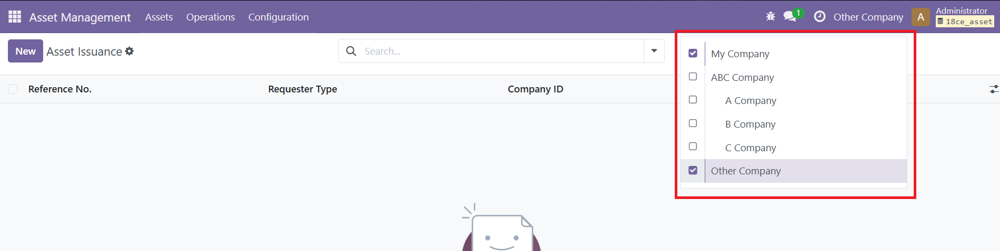
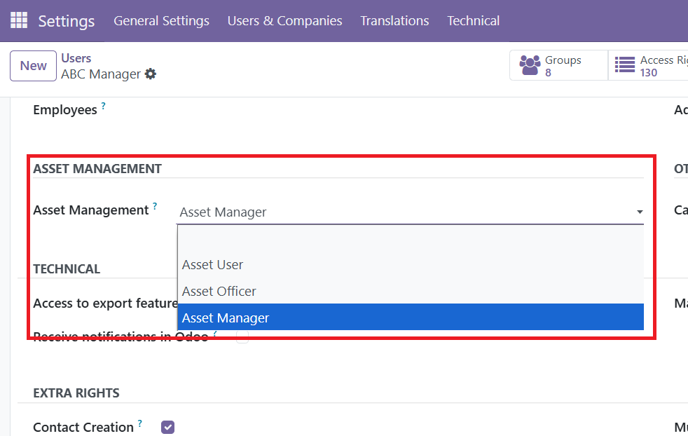
For questions, enhancements, or technical support:
Email: lslanzaderas@gmail.com
Portfolio:
https://lawrencelanzaderas-portfolio.netlify.app
LinkedIn:
https://www.linkedin.com/in/lawrence-lanzaderas-a5862b151
GitHub:
https://github.com/IAmLawrence